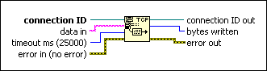
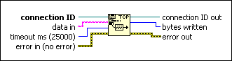

TCP Write Function
Owning Palette: TCP VI and Functions
Requires: Base Development System
Writes data to a TCP network connection.

 Add to the block diagram Add to the block diagram |
 Find on the palette Find on the palette |
Owning Palette: TCP VI and Functions
Requires: Base Development System
Writes data to a TCP network connection.

| Add to the block diagram |
Find on the palette |
 |
connection ID is a network connection refnum that uniquely identifies the TCP connection. |
 |
data in contains the data you want to write to the connection. Use one of the following techniques to handle messages that might vary in size:
|
 |
timeout ms specifies the time, in milliseconds, for the function to write bytes to a device before the function completes and returns an error. The default value is 25,000 ms. A value of –1 indicates to wait indefinitely. |
 |
error in describes error conditions that occur before this node runs. This input provides standard error in functionality. |
 |
connection ID out returns the same value as connection ID. |
 |
bytes written is the number of bytes the VI writes to the connection. |
 |
error out contains error information. This output provides standard error out functionality. |
Refer to the TCP Named Service.lvproj in the labview\examples\Data Communication\Protocols\TCP\TCP Named Service directory for an example of using the TCP Write function.
 Open example Find related examples
Open example Find related examples